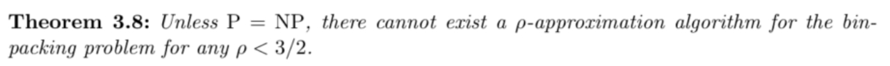
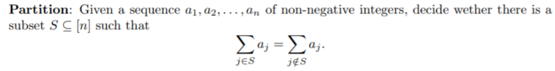
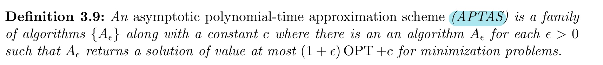
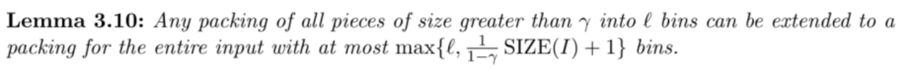
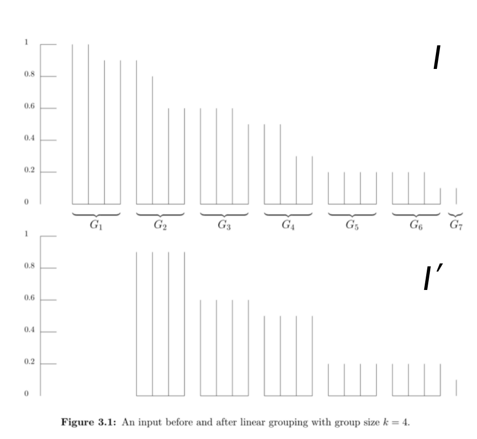
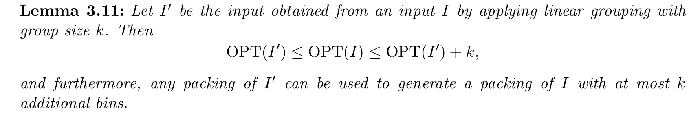
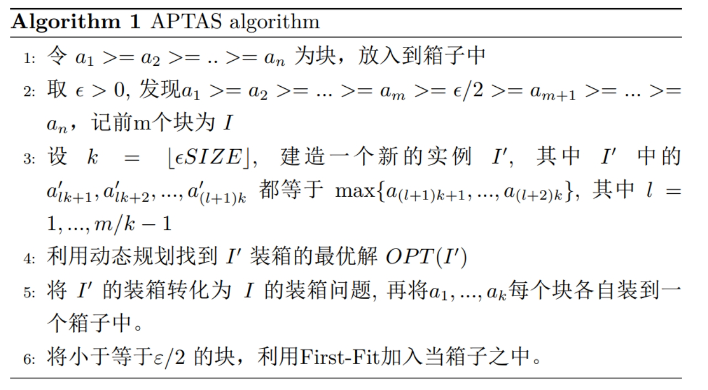
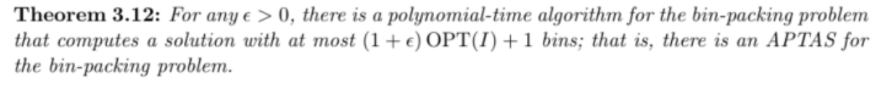

The bin-packing problem
本节取自《The Design of Approximation-Algorithms》3.3
The bin-packing problem
定义
\(n\)件物品，每件物品有体积\({a_𝑖}\), ，约定\(0<{a_1} \leq {a_2}...\leq {a_n}<1\), 有容量为\(1\)箱子, 要用尽可能少的箱子容纳所有的物品。

\(proof 1\).证明Binpacking问题的Decision version是NP-complete。
思想：将已知是\(NPC\)问题的Partition Problem约化到Binpacking问题

Decision version of Binpacking: 给出\(K\)个背包, 问能不能装下所有物品。
证明：构造一个Binpacking问题的instance： \[ K=2, s_i=\frac{2 a_i}{\sum_{i=1}^n a_i} \] 一个Partition相当于得到将这些物品装入2个箱子的解
\(proof 2\).证明Binpacking不存在\(𝛼−𝑎𝑝𝑝𝑟𝑜𝑥𝑖𝑚𝑎𝑡𝑖𝑜𝑛(𝛼<3/2)\), 除非\(P=NP\).
- 思想：反证法
- 证明：假设存在一个 \(\left(\frac{3}{2}-\epsilon\right)-\) approximation，任意Partition Problem的instance \(𝐼_𝑃\)可以用\(Q_1\)的方法，构造出一个对应的Binpacking的instance \(𝐼_𝐵\), 显然\(𝑂𝑃𝑇(𝐼_𝐵)\geq2\). 要回答\(𝐼_𝑃\)是不是yes, 实际上就是问\(𝑂𝑃𝑇(𝐼_𝐵)\)是不是等于2。
First-Fit-Decreasing algorithm
- idea：将物品按size从大到小排序，依次进行装箱, 逐个检查当前已经开着的箱子, 发现第一个能装下它的箱子就装。如果都装不下，开一个新的箱子装它。
- performance guarantee：\(F F D(I) \leq\left(\frac{11}{9}\right) \operatorname{OPT}(I)+4\)
First- Fit algorithm
idea：将物品依次进行装箱, 逐个检查当前已经开着的箱子, 发现第一个能装下它的箱子就装。如果都装不下，开一个新的箱子装它。
performance: \(\mathrm{FF}(I)=\ell \leq 2 \operatorname{SIZE}(I)+1 \leq 2 \operatorname{OPT}(I)+1\).
\(proof\):
把编号相邻的箱子配对, 考虑箱子\(2k−1\)和箱子\(2k\)。我们打开了箱子\(2k\), 说明箱子\(2k−1\)里面的物品体积之和加上箱子\(2k\)里面的第一个物品的体积, 必然是大于1的，否则按照算法流程会把那个物品放入箱子\(2k−1\).
设加入最后一个箱子的第一件物品为\(L\)，\(\sum_{i=1}^{L-1} a_i>\left\lfloor\frac{\ell}{2}\right\rfloor\)。因此\(SIZE(I)=\sum_{i=1}^{n} a_i \geq \sum_{i=1}^{L-1} a_i>\left\lfloor\frac{\ell}{2}\right\rfloor \geq\frac{\ell-1}{2}\).
显然，\(OPT(I)\geq SIZE(I)\)，因为当所有箱子完全装满时\(OPT(I)= SIZE(I)\)。
综上得到\(\mathrm{FF}(I)=\ell\leq 2 \operatorname{OPT}(I)+1\).

dynamic programming algorithm
special case 1: constant number of distinct piece sizes, only a constant number of pieces can fit into one bin.?

\(proof\):
begin with small pieces：\(\ell\)
otherwise：已知所有的物品的\(a_i > \gamma\)，则除最后一个箱子外，任一箱内的物品体积之和为\(1-\gamma\)，否则还可以继续装物品。设总共装了\(K+1\)个箱子，则\(SIZE(I)\geq (1-\gamma)K\)，\(K+1\leq SIZE(I)/1-\gamma\)。
为了设计出一种优于FF的算法，根据\(Lemma 3.10\)需要令\(\gamma = ϵ/2\)。
Linear grouping scheme
- step1 分组: 已知实例\(I\)、参数\(k\)，对\(I\)进行如下分组：第一组由\(k\)个最大的物品组成，第二组由剩下物品中\(k\)个最大的物品组成......直至所有物品都被分组。最后一组由\(h\)个物品组成，\(h \leq k\)。
- step2 凑整：丢掉第一组，将各组中的物品变为该组中最大物品的大小。
- 
- 
- \(proof\):
- 由于\(I\)中的第一组永远大于\(I'\)第一组中的物品，以此类推...所以\(OPT(I')\leq OPT(I)\)。
- 将\(I\)中\(k\)个最大的物品单独放在\(k\)个箱子中，剩余的物品因为总的来说小于\(I'\)中的物品，所以满足\(OPT(I)\leq OPT(I')+k\)。
asymptotic polynomial-time approximation scheme

analysis:

\(proof\):
已知该算法最多需要${,(1+ϵ)OPT(I)+1} $个箱子
由\(Lemma 3.11\)，\(OPT(I')\leq OPT(I)\)，又因为\(k=\lfloor\epsilon SIZE（I）\rfloor\)
\[ \begin{aligned} \text { result } & \leq \max \left\{O P T\left(I^{\prime}\right)+k,(1+\epsilon) O P T+1\right\} \\ & \leq \max \{O P T(I)+k,(1+\epsilon) O P T+1\} \\ & \leq \max \{O P T(I)+\lfloor\epsilon S I Z E\rfloor,(1+\epsilon) O P T+1\} \\ & \leq \max \{O P T(I)+\epsilon O P T,(1+\epsilon) O P T+1\} \\ & \leq \max \{(1+\epsilon) O P T,(1+\epsilon) O P T+1\} \end{aligned} \]